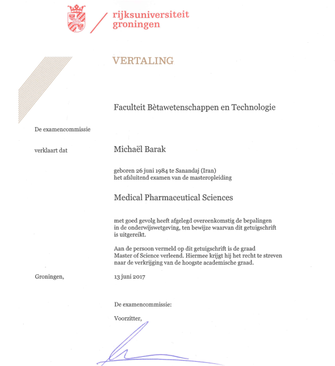
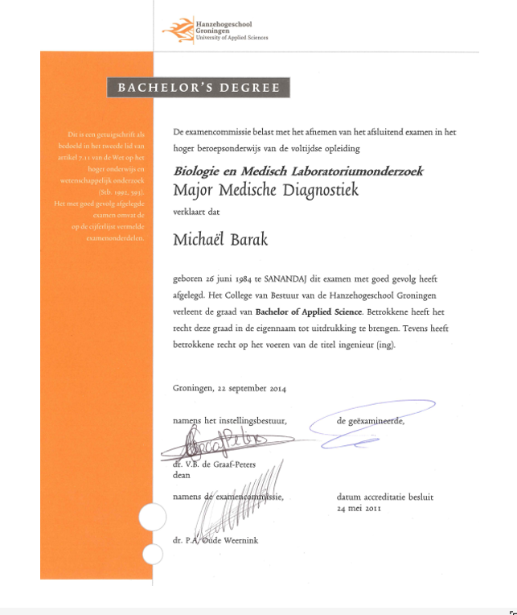

Certificates of Michael Barak
Master Degree
Bachelor Degree
Responsive Web Development Degree

JavaScript Degree

Front End Development Degree

Scientific Computing with Python

Data Visualization

Back End Development and API's